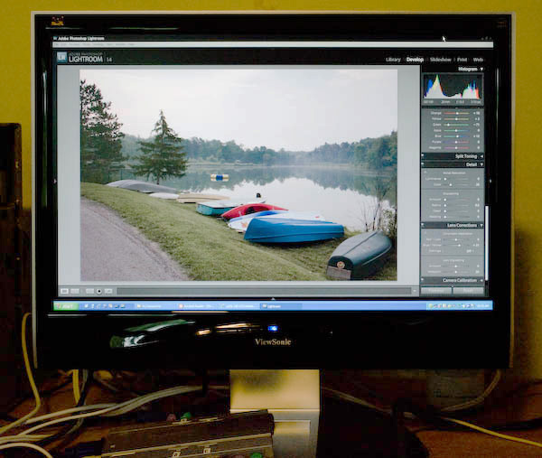
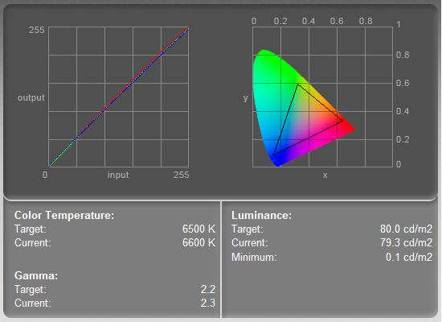

|
ViewSonic VX2235wm LCD ReviewVersion 1.0, © 2008 by Dale Cotton, all rights reserved This review concentrates on the suitability of this display for photo viewing and editing and similar visual graphics work. It does not cover gaming.  Fig. 1: ViewSonic in use Each summer I travel the 300 miles to my father's house for a week's visit. A few months back he purchased the VX2235 together with a new computer. Since the ViewSonic only cost $350 my expectations were not high and were quickly exceeded as I put it to use. The VX2235 is a 22" display with an 18.65" by 11.66" viewing area. The 1680 by 1050 aspect ratio is wider and narrower at 8:5 than the 1600 by 1200 (4:3) I use at home. I suppose this is intended as a compromise between the new-fangled 16:9 wide screen aspect ratio and the traditional 4:3. However it originated, it's actually a plus for graphics work, since it allows a large view of the image being edited while leaving room for control panes on left or right (see Fig. 1). To my surprise aspect ratio is the only obvious difference my eyes could find between the ViewSonic and my own 3x more expensive La Cie 320. The ViewSonic's pixel pitch of .282 mm is signicantly larger than the La Cie's, but in practice this does not have the negative impact I was expecting, probably due to being subsumed by any combination of sharpness and viewing distance.  Fig. 2: EyeOne profiling results at 80 cd/m2 My eyes told me that the ViewSonic's colours were accurate, which a quick session with my trusty EyeOne Display 2 spectrophotometer confirmed. The gamut is pretty much standard sRGB and just slightly smaller at the red and blue ends than my La Cie. The ViewSonic can be calibrated and profiled right down to 80 cd/m2 (which you might do in a very dim work room); as Fig. 2 shows, very minimal profile-based corrections were needed after calibration.
Fig. 3: EyeOne profiling results at 120 cd/m2 Fig. 3 shows the results of profiling the ViewSonic using the 6500K preset, contrast at about 50% and brightness at about 75% (a typical mix) – as you can see the corrections needed are minimal. This tells us that even unprofiled the VX3325 puts up colours that are maybe 95% accurate to 2.2 gamma from darkest to lightest (although the spread does begin to increase toward the brightest values). The four button on-screen display (OSD) menu covers all the usual bases, including all settings needed to calibrate and profile, meaning brightness, contrast, OSD position, and separate RGB channel intensity controls. There is also a sharpness option but it is greyed out as I write this, which probably indicates that it is not available given the other settings I have selected. IAC, the default sharpness is just fine in that individual pixels blend together as on a CRT. Warm-up time is very short. Unlike with some previous-generation displays you won't have to wait ten or twenty minutes before the backlighting reaches full temperature so you can get to work. So what is this? Do we have a pro grahics tool selling for bargain basement prices? Well, not quite: the Achilles' heel of this monitor took me a few days to latch on to but it does exist: viewing angle. Not nearly as bad as the typical laptop display, nevertheless the VX3325 does present a different face as you change your eye position in any direction. The implication for image viewing and editing is that you need to keep your chair at the same height and keep the monitor tilt unchanged from session to session. There is also a slight darkening (vignetting) in the corners and a slight dimming at the top edge to be seen, even at the ideal viewing angle, due to this narrow viewing angle window. Frankly, this seems a very acceptable trade-off for the bargain price of this monitor, provided only one person is going to be the primary user. A second and taller or shorter user would need to change the tilt or chair height for optimal viewing, which would grow old very quickly in day-to-day use. For a primary user concerned enough with accuracy to profile the monitor, he or she would want to also consider chair height, monitor height, and monitor tilt as needing to be kept constant along with brightness, contrast, etc.
|